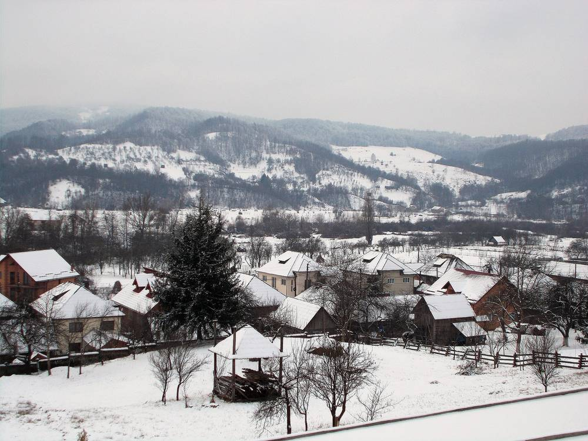

루마니아 북부 바르사나 면, 에너지부 재원 189만 레이로 약 0.5MW 면 소유 태양광 공사 시작 명령…가로등·면 기관 전기 충당

마라무레슈주 상수도 양수·정수장 옆 약 7,000㎡ 부지에 전기차 충전소 함께…저장 배터리, 공공건물 지붕 태양광·열펌프 사업은 농촌투자기금청에 신청
루마니아 북부 마라무레슈주의 농촌 지자체 바르사나(Bârsana) 면이 면 소유 태양광 발전소 공사에 들어간다. 전기차 충전소를 갖춘 '프로슈머(전기 생산·소비자)' 태양광 발전소 건설 사업의 건축 허가가 나왔고, 면은 공사를 시작하라는 행정 명령을 내렸다. 사업비는 부가가치세를 빼고 189만3,567.28레이로 루마니아 에너지부가 재원을 대며, 발전소는 바르사나의 상수도 양수·정수장 근처 약 7,000㎡ 부지에 들어서고 예상 발전 용량은 0.5MW에 조금 못 미친다. 면은 만든 전기 일부를 가로등과 면 소속 기관의 전기 수요에 돌려 전기요금과 지방 예산 지출을 줄일 계획이다. 이와 함께 면은 낮에 만든 전기 일부를 저장해 필요할 때 쓰는 배터리를 사서 설치하는 사업과, 새 부지에 태양광을 더 짓고 공공건물 지붕에 태양광을 올리며 공공건물 난방용 열펌프를 사는 사업을 농촌투자기금청(AFIR)에 신청해 둔 상태다. 연간 발전량과 완공 시점, 면 전기 소비 가운데 얼마를 채울지는 밝혀지지 않았다.
시민에너지 관점
그리스는 2018년 에너지공동체법을 만들어 지자체와 주민, 지역 기업이 한 공동체로 묶여 발전 설비를 함께 소유할 수 있는 길을 열었다. 인구가 적은 농촌 면이 상수도 시설 옆 공공부지에 스스로 발전소를 짓고 가로등과 공공기관 전기를 대겠다는 바르사나의 계획은 에너지 전환이 큰 도시만의 일이 아니라는 점을 보여 준다. 작은 지자체가 설비를 감당할 수 있겠느냐는 우려에는 정부 재원으로 발전소를 짓고 배터리와 지붕 태양광은 농촌 기금에 따로 신청하는, 단계를 나눈 이 면의 방식이 하나의 답이 된다. 다만 지금 계획에는 주민 참여가 보이지 않는 만큼 다음 단계의 지붕·추가 부지 태양광부터는 주민이 지분을 갖고 이익을 나누는 구조를 더해야 하며, 우리 농촌 지자체도 공공부지 태양광을 주민과 함께 소유하는 방식으로 시작할 길을 찾아야 한다.
출처: Maramures Online 2026-11-01 기자 미표기 원문 보기
ルーマニア北部バルサナ村、エネルギー省の財源189万レイで約0.5MWの村有太陽光発電所に着工命令…街路灯・村の機関の電力に充当
マラムレシュ県の上水道揚水・浄水場そばの約7,000㎡の用地にEV充電設備も…蓄電池、公共建物の屋根置き太陽光・ヒートポンプの事業は農村投資資金庁に申請
ルーマニア北部マラムレシュ県の農村自治体バルサナ（Bârsana）村が、村有の太陽光発電所の工事に入る。電気自動車の充電設備を備えた「プロシューマー（電力の生産者兼消費者）」太陽光発電所建設事業の建築許可が下り、村は工事開始の行政命令を出した。事業費は付加価値税を除いて189万3,567.28レイで、ルーマニアのエネルギー省が財源を出す。発電所はバルサナの上水道揚水・浄水場の近くにある約7,000㎡の用地に建ち、見込み発電容量は0.5MWをわずかに下回る。村は発電した電気の一部を街路灯と村の機関の電力需要に回し、電気料金と地方予算の支出を減らす計画だ。あわせて村は、昼間に発電した電気の一部をためて必要なときに使う蓄電池の購入・設置事業と、新たな用地での太陽光の増設、公共建物の屋根への太陽光設置、公共建物の暖房用ヒートポンプ購入の事業を農村投資資金庁（AFIR）に申請している。年間発電量や完成時期、村の電力消費のうちどれだけを賄うかは明らかにされていない。
市民エネルギーの視点
ギリシャは2018年にエネルギー共同体法を制定し、自治体と住民、地元企業が一つの共同体として発電設備を共同所有できる道を開いた。人口の少ない農村の村が上水道施設そばの公有地に自ら発電所を建て、街路灯や公共機関の電気を賄おうとするバルサナの計画は、エネルギー転換が大都市だけのものではないことを示している。小さな自治体に設備を担えるのかという懸念には、政府の財源で発電所を建て、蓄電池や屋根置き太陽光は農村基金に別途申請するという、段階を分けたこの村のやり方が一つの答えになる。ただ、現在の計画には住民参加が見えないだけに、次の段階の屋根置き・追加用地の太陽光からは住民が持ち分を持って利益を分かち合う仕組みを加えるべきであり、韓国の農村自治体も公有地の太陽光を住民と共同で所有する形で始める道を探るべきだ。
出典: Maramures Online 2026-11-01 記者名なし 原文を読む
罗马尼亚北部布尔萨纳乡以能源部资金189万列伊下达约0.5MW乡有光伏电站开工令…供应路灯和乡属机构用电
马拉穆列什县供水泵站和净水厂旁约7,000平方米用地，同时建电动汽车充电站…储能电池、公共建筑屋顶光伏和热泵项目已向农村投资基金局申请
罗马尼亚北部马拉穆列什县的农村自治体布尔萨纳（Bârsana）乡将开工建设乡有光伏电站。配备电动汽车充电站的“产消者（prosumer，既发电又用电）”光伏电站建设项目已获得建筑许可，乡政府下达了开工行政令。项目投资不含增值税为189万3,567.28列伊，由罗马尼亚能源部出资；电站将建在布尔萨纳供水泵站和净水厂附近约7,000平方米的用地上，预计装机容量略低于0.5MW。乡政府计划把部分发电量用于路灯和乡属机构的用电需求，以减少电费和地方预算支出。与此同时，乡政府已向农村投资基金局（AFIR）申请两个项目：一是购买并安装储能电池，把白天发的部分电储存起来按需使用；二是在新用地上增建光伏、在公共建筑屋顶安装光伏，并购买公共建筑供暖用热泵。年发电量、完工时间以及能满足全乡用电的多少比例均未公布。
市民能源视角
希腊在2018年制定能源共同体法，为地方政府、居民和本地企业结成一个共同体、共同拥有发电设施开辟了道路。人口不多的农村乡镇在供水设施旁的公有土地上自建电站，为路灯和公共机构供电，布尔萨纳的计划说明能源转型并不只是大城市的事。对于小地方政府能否承担设施的担忧，这个乡用政府资金建电站、再把储能电池和屋顶光伏另行向农村基金申请的分步做法，就是一种回答。不过目前的计划中看不到居民参与，从下一阶段的屋顶和新增用地光伏开始，就应加入居民持股、分享收益的结构；韩国的农村地方政府也应探索以与居民共同拥有的方式启动公有土地光伏。
来源: Maramures Online 2026-11-01 未署名 查看原文
Romania's Bârsana commune orders work to start on a roughly 0.5MW council-owned solar plant funded with 1.89 million lei from the Energy Ministry, to power street lights and local institutions
The plant, with an EV charging station, will sit on about 7,000㎡ next to the water pumping and treatment station in Maramureș County; projects for storage batteries, rooftop solar on public buildings and heat pumps have been submitted to the rural investment agency AFIR
Bârsana, a rural commune in Maramureș County in northern Romania, is starting work on a solar power plant of its own. A building permit has been issued for the project to build a "prosumer" solar plant equipped with an electric vehicle charging station, and the commune has issued the administrative order to begin construction. The project costs 1,893,567.28 lei plus VAT and is funded by Romania's Energy Ministry; the plant will occupy about 7,000㎡ near Bârsana's water pumping and treatment station, with an estimated capacity of just under 0.5MW. The commune plans to use part of the electricity to cover the needs of street lighting and its own institutions, cutting power bills and local budget spending. Alongside it, the commune has submitted two projects to the Agency for Financing Rural Investments (AFIR): one to buy and install storage batteries so that some of the power produced during the day can be used later, and another to add solar panels on a new site and on the roofs of public buildings and to buy heat pumps to heat those buildings. The plant's annual output, completion date and the share of the commune's consumption it will cover have not been disclosed.
Citizen Energy View
Greece passed an energy community law in 2018 that opened the way for municipalities, residents and local businesses to join a single community and own generating assets together. Bârsana's plan, in which a small rural commune builds its own plant on public land beside its water works to light its streets and power its public buildings, shows that the energy transition is not only for big cities. To those who doubt a small council can take on such assets, the commune's step-by-step approach, building the plant with government money and applying separately to a rural fund for batteries and rooftop panels, offers one answer. But since residents are nowhere to be seen in the current plan, the next phase of rooftop and new-site solar should add a structure in which residents hold shares and share the returns, and Korea's rural local governments, too, should find ways to start public-land solar as something they own together with residents.
Source: Maramures Online 2026-11-01 No byline Read the original